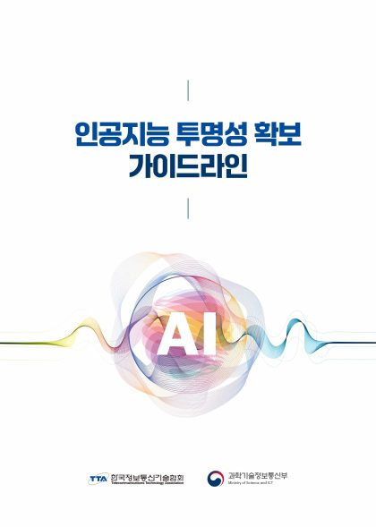
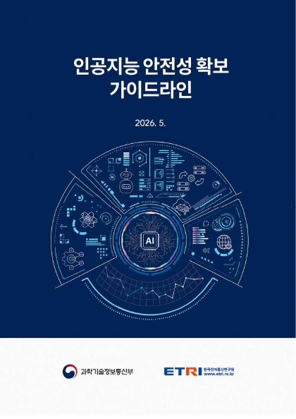
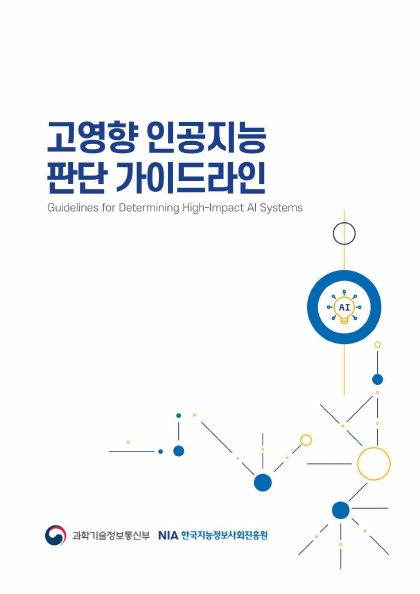
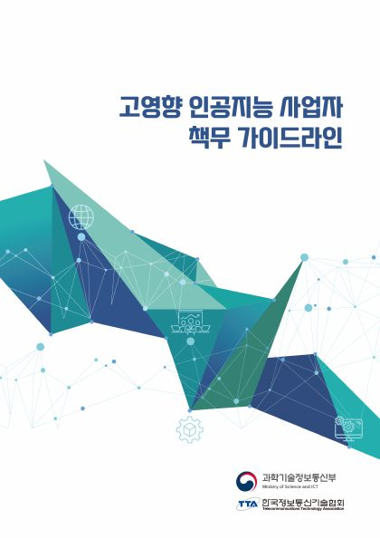
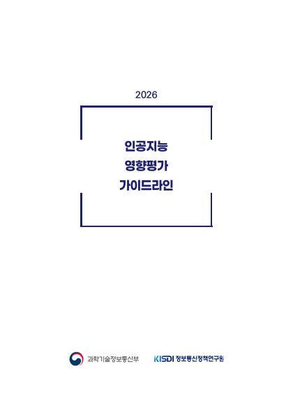

인공지능기본법·시행령이 위임한 세부 이행기준을 과학기술정보통신부가 실무 가이드라인 형태로 풀어낸 자료 5종입니다. 법령은 아니지만, 법이 요구하는 의무(투명성·안전성·고영향 판단·사업자 책무·영향평가)를 실제로 어떻게 이행하는지 구체적 절차와 예시를 담고 있습니다.
과학기술정보통신부가 발간한 AI 관련 가이드라인 5종입니다. 법령이 아니라 실무 이행기준을 설명하는 참고 자료입니다. 제목을 클릭하면 sw.or.kr 원문 PDF가 새 탭으로 열립니다.

과기정통부 · TTA
AI 기반 제품·서비스임을 이용자에게 사전 고지하고, 생성형 AI 결과물임을 어떻게 표시해야 하는지를 다룬다. 사전고지 의무·표시 의무·딥페이크 생성물 표시 의무 세 가지로 구성됨.

과기정통부 · ETRI
누적연산량 10²⁶ FLOPs 이상 등 일정 기준을 넘는 고위험 AI시스템의 위험을 수명주기 전반에 걸쳐 식별·평가·완화하고, 안전사고 모니터링·대응 체계와 보고 절차를 다룬다.

과기정통부 · NIA
에너지·먹는물·보건의료·원자력·범죄수사및체포·채용·대출심사·교통(차/선박/항공/철도)·공공서비스·교육 13개 분야에서 어떤 AI가 "고영향 인공지능"에 해당하는지 판단 기준과 분야별 활용 사례를 다룬다.

과기정통부 · TTA
고영향 AI를 제공하는 사업자가 이행해야 할 위험관리방안 수립·운영, 결과·기준·학습데이터 설명 방안, 이용자 보호 방안, 사람의 관리·감독, 안전·신뢰 확보 조치 문서화 등 6가지 책무를 다룬다.

과기정통부 · KISDI
고영향 AI 제품·서비스가 사람의 기본권에 미치는 영향을 사전에 평가하는 절차와 영향평가서 작성 방법을 다룬다. EU AI Act의 기본권 영향평가(제27조)와 상호운용성을 염두에 둠.
관계선: ③↔④(상호참조 — 고영향 판단 결과와 사업자 책무 이행 방법이 서로를 인용) · ④→⑤(사업자 책무 이행 시 영향평가 절차 활용 안내) · ⑤→③(영향평가 대상 판단 시 고영향 판단 가이드라인 참조 안내). ①②는 다른 가이드라인을 인용하지 않습니다.
파란 배지 = 이 절차구조도 노드가 근거로 삼는(또는 실질적으로 연결되는) 가이드라인 · 배지 없는 노드는 5개 가이드라인 범위 밖 · 표는 인공지능기본법 절차 구조도의 G0~G3 열만 그대로 옮긴 것(임의 재구성 아님)
노드를 클릭하거나 포커스를 이동하면 상세 정보가 여기에 표시됩니다.